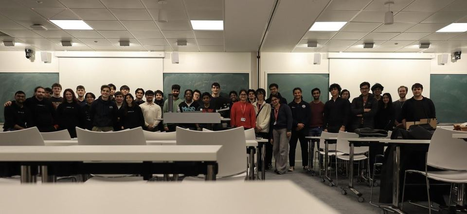
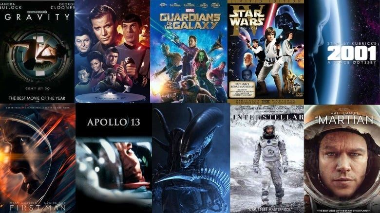
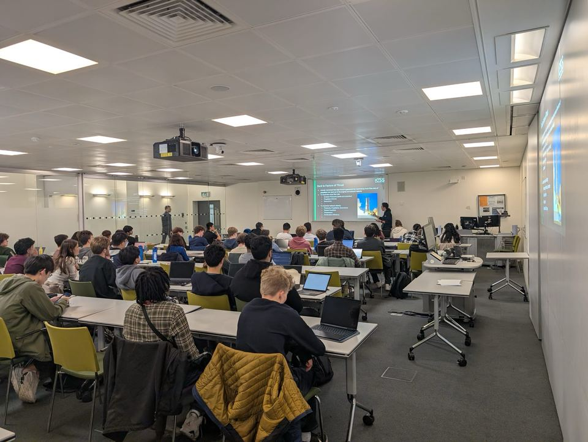
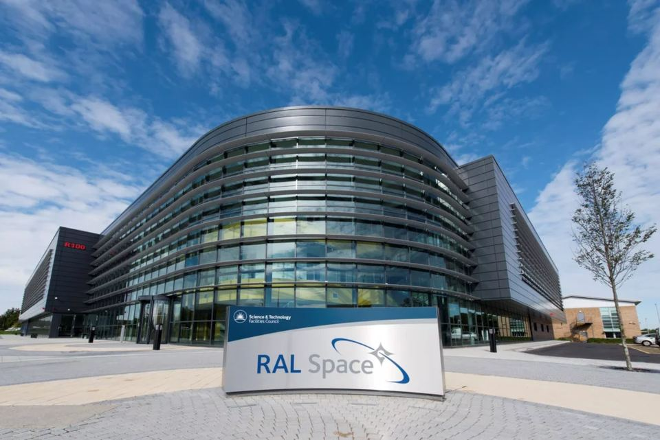

Events
Not everything we do involves a torque wrench.
OMG THEY CAUGHT THE ROCKET!!
no way no way no WAY
Launch watch parties
Big launch coming up? We book a room, put it on the big screen and shout at it together. Delays and scrubs are inevitable, so there’s usually a space quiz running while we wait.
Hackathons
We run hackathons with hardware, software and presentation tasks, sponsored and judged by people from industry. Expect 3D printers, circuit-assembly kit, a prototyping space, free lunch and prizes.
- LEOHack — simulating in-space docking of satellite vehicles (with Magdrive)
- SatHack — simulating autonomous debris-evasion systems (with Lodestar Space)
- Prizes totalling over £300 · next one: 21–22 November



…and the rest

Movie nights
Free snacks, a space film, and people to argue about the physics with.
Trivia nights
Pub-quiz style space trivia (sometimes with AstroSoc). There may be prizes.

Industry talks
People from ESA, the Science Museum and space start-ups telling us how it really works.

Trips
Site visits and tours — RAL Space, test sites, and wherever else will have us.
Outreach
We support the UK Space Design Competition (hosting, volunteering and talks), the UK Youth Rocketry Competition (UKROC) and CanSat.
dates get posted in the WhatsApp community first → join